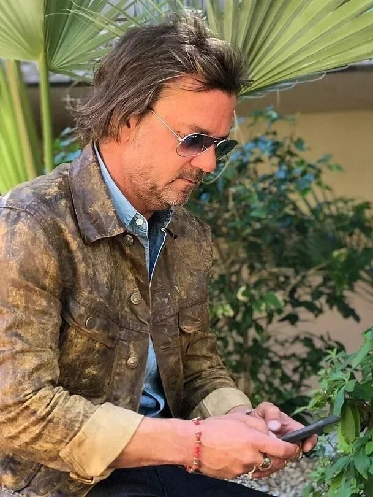

The Studio

Weston Broadrick Studio is a Phoenix-based interior design practice specializing in restaurant and hospitality environments.
Founded by Weston Broadrick, the studio is known for creating refined, immersive interiors that elevate the guest experience while supporting the operational goals of each client.
Weston brings over a decade of experience from Ralph Lauren Home, where he developed a deep understanding of craftsmanship, materiality, and the art of layered, narrative-driven spaces. Influenced by Ralph Lauren’s distinct point of view—where heritage, lifestyle, and environment intersect—his work reflects a balance of timeless design and modern sensibility.
The studio designs residential, hospitality, and retail interiors, with a particular focus on restaurants. Each project is approached as a complete experience, where layout, lighting, texture, and detail work together to shape how a space feels and functions.
Weston Broadrick Studio works with a discerning clientele and takes on a limited number of projects each year to maintain the highest standards of craft. This selective approach fosters a highly collaborative and considered design process, ensuring each interior is both visually compelling and deeply functional—spaces that captivate guests and endure over time.
Inquiries
weston@westonbroadrick.com